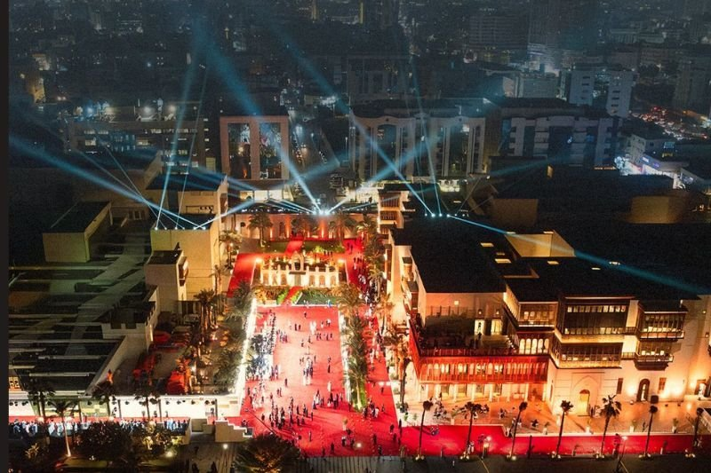
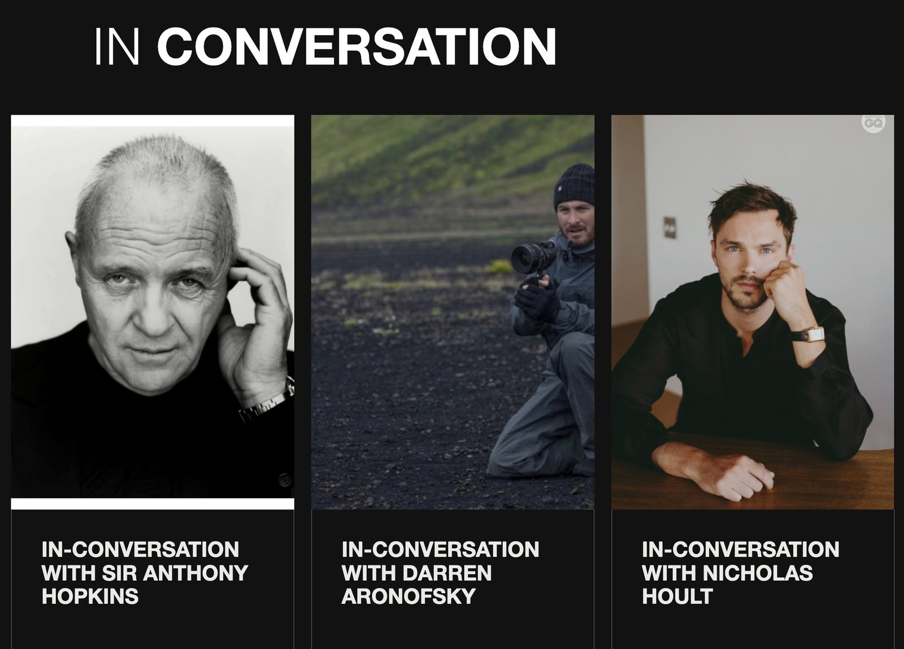
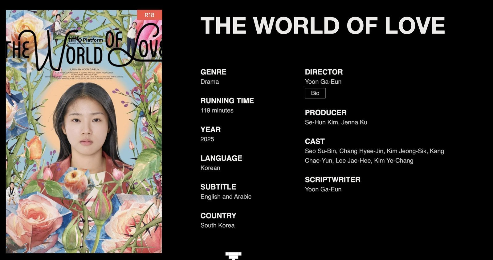
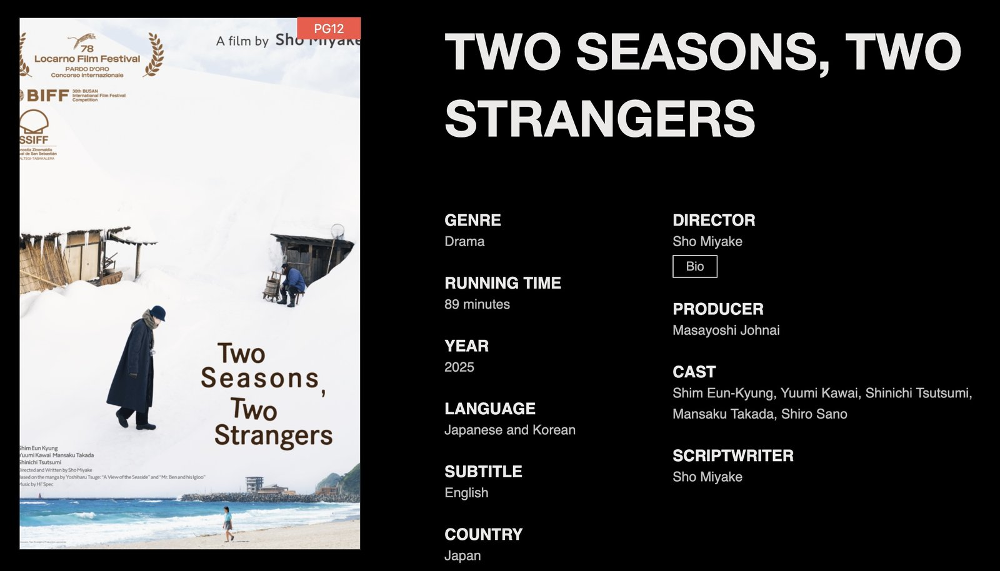
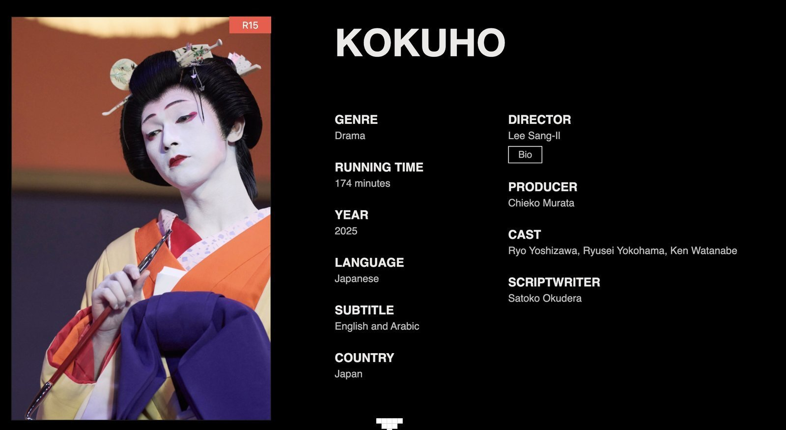
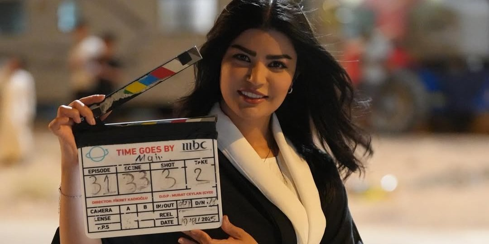

중동·아프리카 영화 산업의 새로운 중심지로 떠오르는 RSIFF
사우디아라비아 제다에서 개최되는 '레드씨 국제 영화제(Red Sea International Film Festival, RSIFF)'는 2025년 12월 4일부터 13일까지 10일간 열리며, 2021년 출범 이후 불과 5년 만에 MENA(중동·북아프리카) 지역을 대표하는 국제 영화제로 빠르게 성장했다. 유네스코 세계문화유산 지역 알 발라드(Al-Balad) 일대에서 진행되는 영화제는 도시의 역사 질감과 현대 영화문화가 결합된 독특한 분위기로 세계 영화인들의 주목을 받고 있다.

▲ 레드씨 국제 영화제 전경 — 출처: The Gulf Independent
레드씨 국제 영화제(RSIFF)는 지금까지 520편 이상의 세계 각국 작품을 소개하며 신인 창작자 발굴, 여성 영화인 지원, 글로벌 영화산업 협력 확대를 주요 목표로 삼아왔다. 특히 2018년 극장이 재개된 이후 빠르게 성장한 사우디 영화산업의 현재와 미래를 동시에 보여주는 상징 플랫폼으로 자리매김했다. 올해 영화제는 앤서니 홉킨스, 아드리엔 브로디, 니콜라스 홀트, 제시카 알바, 다코타 존슨, 대런 아로노프스키 감독 등이 영화제를 찾았으며, '인 컨버세이션(In Conversation) 프로그램'을 통해 관객과 직접 소통하며 RSIFF의 국제 위상을 더욱 공고히 했다.

▲ 인 컨버세이션(In Conversation) 섹션에 참여한 주요 영화인들 — 출처: 레드씨 국제영화제 공식 웹사이트
레드씨 영화제 주요 섹션 소개
레드씨 국제 영화제는 ▲ 메인 경쟁 섹션 '컴피티션(Competition)', ▲ 올해 전 세계 주요 영화제를 휩쓴 화제작을 모은 '페스티벌 페이버릿츠(Festival Favorites)', ▲ 아랍권 주요 작품을 조명하는 '아랍 스펙태큘러(Arab Spectacular)', ▲ 국제 비경쟁 쇼케이스 '인터내셔널 스펙태큘러(International Spectacular)', ▲ 사우디 로컬 신작을 소개하는 '뉴 사우디 시네마(New Saudi Cinema)', ▲ 세계적 영화인과의 대담 프로그램 '인 컨버세이션(In Conversation)' 등 다양한 섹션으로 구성된다.
한국 감독·배우 작품 나란히 RSIFF 진출
올해 RSIFF 메인 경쟁 부문에는 총 16편의 작품이 공식 초청되었으며, 그 중 하나로 윤가은 감독의 신작 <세계의 주인(The World of Love, 2025)>이 선정됐다. 현재 한국에서도 상영 중인 이 작품은 '인싸'와 '관종' 사이의 경계에 선, 속내를 알 수 없는 열여덟 살 여고생 '주인'이 전교생이 참여한 서명 운동을 홀로 거부한 뒤 정체불명의 쪽지를 받기 시작하면서 펼쳐지는 이야기를 그린다. 윤가은 감독은 두 여성 주인공의 감정과 관계를 섬세하게 포착하며, 그녀 특유의 따뜻한 감수성과 날카로운 서사가 돋보인다.

▲ 메인 경쟁 부문 공식 초청작 한국 영화 '세계의 주인' — 출처: 레드씨 국제영화제 공식 웹사이트
윤가은 감독은 한국 독립 영화계에서 자신만의 미학과 서사를 확립해온 대표 여성 감독으로, 이번 RSIFF 메인 경쟁 부문 공식 초청으로 한국 여성 감독 작품의 국제적 영향력을 다시 한번 입증했다. 한편 올해 경쟁 부문에는 한국 배우 심은경이 출연한 일본 감독 미야케 쇼(Sho Miyake)의 <여행과 나날(Two Seasons, Two Strangers)>도 올라 눈길을 끈다.

▲ 경쟁 부문 초청작, 한국 배우 심은경 주연의 일본 영화 '여행과 나날' — 출처: 레드씨 국제영화제 공식 웹사이트
또한 최근 일본 실사 영화 사상 최초로 천만 관객을 돌파하며 큰 화제를 모은 재일교포 3세 영화감독 이상일의 영화 <국보(Kokuho)>가 'RSIFF Festival Favourites' 섹션에 포함됐다. 이상일 감독이 15년에 걸쳐 준비한 이 작품은 가부키의 '오나가타'(여성 역할을 연기하는 남성 배우) 전통과 그 예술적 유산을 깊이 있게 탐구하는 드라마로, 일본 박스오피스에서 흥행과 작품성을 모두 인정받았다.

▲ 페스티벌 페이버릿츠(Festival Favourites) 부문 초청작, 일본 영화 '국보' — 출처: 레드씨 국제영화제 공식 웹사이트
산업·미디어 파트너십 강화로 확장된 영화제 플랫폼
2025년 RSIFF는 사우디 영화 산업의 성장 속도에 맞춰 산업·재정·미디어 생태계가 총집결된 해로 평가된다. 올해 주목받은 변화는 중동 최대 미디어 기업 MBC 그룹의 프린시펄 파트너(Principal Partner) 참여다. MBC는 개막식과 폐막식을 《MBC1》, 《MBC MASR》, 《MBC IRAQ》 및 《Shahid》를 통해 중계해 영화제의 도달 범위를 중동 전역으로 확장했다. Film AlUla는 전략 파트너로 참여해 '필름 알울라 관객상'와 '필름 알울라 최우수 사우디 영화상' 두 개의 상을 제정·후원했으며, 각 5만 달러(약 7,160만 원)의 상금이 제공된다.

▲ MBC 제작 현장의 현지 여성 영화인 — 출처: Platinumlist
문화발전기금(Cultural Development Fund, CDF)은 올해로 4년 연속 영화제의 산업 허브인 레드씨 수크(Red Sea Souk)을 공식 후원하며 영화 산업의 기획부터 제작·배급·교육까지 전 단계를 아우르는 투자 유치를 추진했다. 이는 사우디가 콘텐츠 소비국을 넘어 문화산업 투자 중심지로 성장하고 있음을 보여준다.
사진출처 및 참고자료
레드씨 국제 영화제 공식 웹사이트, https://redseafilmfest.com
《The Gulf Independent》(2025. 12. 04). Red Sea Film Festival 2025 Adds Big-Name Hollywood Stars to Conversation Series
《Platinumlist》(2025. 12. 03). All Details about Red Sea International Film Festival in Jeddah: Celebrity Guests and Line-up of Films in 2025
《RSIFF》(2025. 12. 01). MBC Group Joins Red Sea International Film Festival As Principal Partner
《RSIFF》(2025. 12. 02). Film AlUla to Sponsor Two Awards at the Red Sea International Film Festival 2025
《RSIFF》(2025. 12. 03). The Cultural Development Fund Sponsors the Red Sea Souk at the 5th Edition of the Red Sea International Film Festival 2025
《Cineuropa》(2025. 11. 06). The fifth Red Sea International Film Festival announces its full line-up